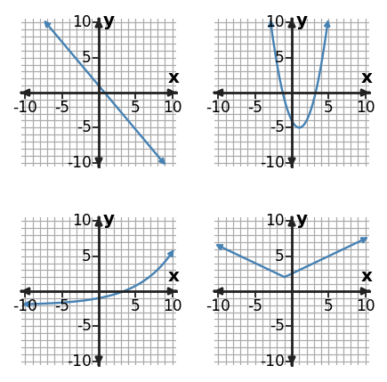
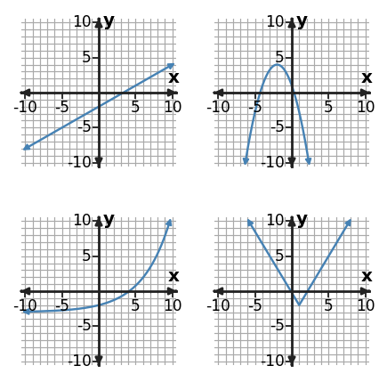

1. Choose the most appropriate function family for the table and support the choice with a difference pattern.
| $x$ | -2 | -1 | 0 | 1 | 2 |
|---|---|---|---|---|---|
| $y$ | 2 | 5 | 6 | 5 | 2 |
2. Choose the most appropriate function family for the table and support the choice with a ratio pattern.
| $x$ | 0 | 1 | 2 | 3 |
|---|---|---|---|---|
| $y$ | 16 | 8 | 4 | 2 |
3. Classify $y=7(0.75)^x$ as linear, quadratic, or exponential. Name one structural clue in the equation.
4. A culture is multiplied by 1.5 every hour. Choose a linear, quadratic, or exponential model and name the behavior that supports your choice.
5. The panel shows four familiar function families. Identify the family in the bottom-right panel and name a visible feature that supports your answer.

6. The points $(0,2),(1,7),(2,12),(3,17)$ suggest a linear model. A new point $(4,25)$ is measured. Is the original linear model still exact? Explain.
7. A table has first differences $1,6,11,16$. A student says the relation is exponential because the changes get larger. Identify the better model family and the decisive pattern.
8. A population-style model is $P(t)=75(1.12)^t$, where $t$ is years after 2024. Explain why using the model for $t=60$ requires caution even though the equation produces a value. State a reasonable domain limitation.
9. Use first differences, second differences, or ratios to decide which model family best fits the table.
| $x$ | 0 | 1 | 2 | 3 | 4 |
|---|---|---|---|---|---|
| $y$ | 5 | 10 | 20 | 40 | 80 |
10. Use the table to choose a linear, quadratic, or exponential model. State the numerical evidence that supports your choice.
| $x$ | -2 | -1 | 0 | 1 | 2 |
|---|---|---|---|---|---|
| $y$ | -7 | -3 | 1 | 5 | 9 |
11. Choose the most appropriate function family for the table and support the choice with a difference pattern.
| $x$ | 1 | 2 | 3 | 4 | 5 |
|---|---|---|---|---|---|
| $y$ | -12 | -6 | -4 | -6 | -12 |
12. Choose the most appropriate function family for the table and support the choice with a ratio pattern.
| $x$ | 0 | 1 | 2 | 3 |
|---|---|---|---|---|
| $y$ | 4 | 6 | 9 | 13.5 |
13. Classify $y=2x^2-7$ as linear, quadratic, or exponential. Name one structural clue in the equation.
14. The height of a fountain stream rises to one maximum and then falls. Choose a model family and name the key behavior.
15. The panel shows four familiar function families. Identify the family in the top-right panel and name a visible feature that supports your answer.

16. The points $(0,10),(1,8),(2,6),(3,4)$ suggest a linear model. A new point $(4,5)$ is measured. Is the original linear model still exact? Explain.
17. A table has first differences $5,9,13,17$. Identify the function family best supported by the difference pattern and explain why.
18. A culture model is $N(t)=40(1.6)^t$ for the first several hours. Explain why a prediction at $t=100$ hours should be treated cautiously.
19. Relationship A is $y=5x+1$. Relationship B has values $(0,3),(1,12),(2,48),(3,192)$. Compare the two families and the way each changes.
20. Compare $y=(x-3)^2+2$ and $y=4(2.5)^x$. Which has a turning point, and which has a constant multiplicative rate?
21. Table A has outputs [2, 6, 10, 14]; Table B has outputs [9, 4, 1, 0]; Table C has outputs ['3', '12', '48', '192'] for consecutive integer inputs. Match A, B, and C to linear, quadratic, and exponential families and cite the pattern used.
22. For $x^2+5x+6=0$, choose the most efficient method from factoring, completing the square, or the quadratic formula, then solve.
23. For $x^2-2x-8=0$, explain why completing the square is a reasonable method, then solve.
24. For this equation, explain why the quadratic formula is a reliable choice and give the exact solutions: $2x^2+5x-1=0$ with the quadratic formula.